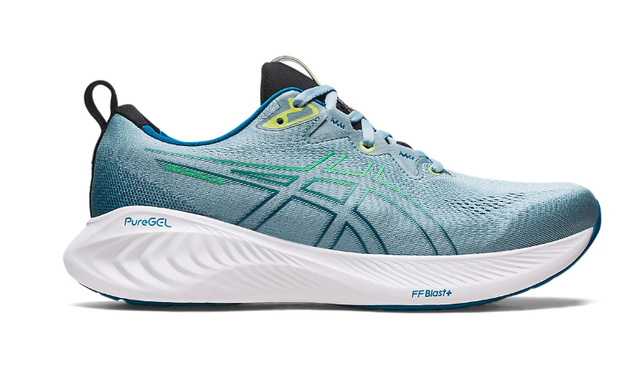
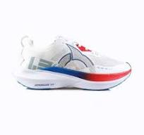
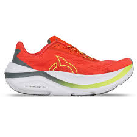
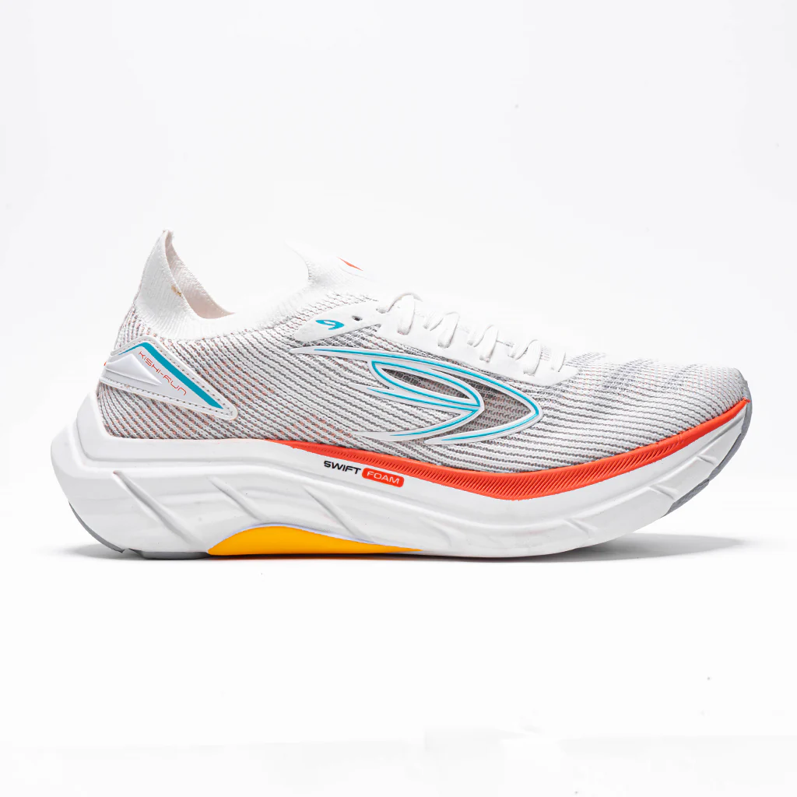
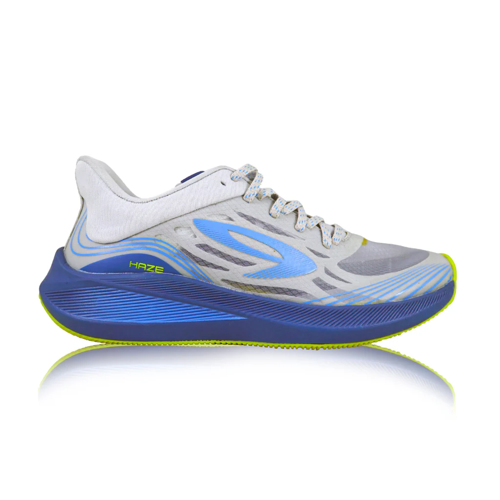

Jika kamu baru mulai lari, pastikan untuk melakukan pemanasan yang cukup dan jangan memaksakan diri.Kamu bisa awali latihan lari kamu dengan Easy run,kenapa kok easy run? karena easy run itu cocok banget buat kamu yang baru nyoba olahraga lari!.Kalo kamu udah terbiasa di easy run kamu bisa nyoba latihan lari yang lainya! seperti:Long run,Interval,Fartlek,Tempo run,dll
Cara Memilih Sepatu Lari
Sepatu yang nyaman dan sesuai tipe kaki sangat penting agar terhindar dari cedera.Atau tidak kamu bsia memilih sepatu lari yang bantalanya empuk!,agar saat latihan Long run kaki terasa nyaman dan enak!.
Manfaat pemanasan sebelum lari
Manfaat utama melakukan pemanasan sebelum olahraga lari adalah menghindari terjadinya risiko cedera. Otot tubuh dalam kondisi normal biasanya masih kaku dan dingin. Jika Anda tiba-tiba melakukan aktivitas olahraga berat, besar kemungkinan Anda terkena cedera otot.
5 Rekomendasi Sepatu lari buat Easy Run

Yang pertama ada dari sepatu Asics Gel-Cumulus 25,kenapa kok aku milih sepatu ini? karena bantalan sepatunya itu empuk banget cocok buat kamu yang baru nyoba lari!.

Yang kedua ada dari sepatu Ortuseight Hyperglide 3.0,ini rekomendasi banget buat kamu yang suka larinya 5k atau 10k,soalnya bantalnya juga empuk sama nyaman kalo di pakai!.

Yang ketiga ada sepatu Ortuseight Hyperblast 2.0,ini sepatunya enak banget di pake pas easy run!,apalagi Sepatu Ortuseight Hyperblast memiliki bantalan Cumulus Foam yang empuk dan nyaman banget di pake.

Yang keempat ada sepatu Kishi run 2.0,Sepatu ini menggunakan teknologi Infiknit
pada bagian upper dengan bahan dasar rajutan yang sudah
didesain dengan bentuk dan tingkat kelenturannya sesuai kebutuhan
khaki. Selain itu pada bagian belakang sepatu diaplikasikan teknologi
Active Frame berbahan dasar TPU yang dapat mensupport
persahabatan kaki dan memperkuat struktur pada sepatu, sehingga
membuat sepatu lebih stabil namun tetap memiliki persaudaraan yang
baik..

Dan yang terakhir ada sepatu Haze vision 1.0,Haze VISION adalah sepatu lari yang menggunakan teknologi upper baru dimana pada sepoatu ini 910 mencoba membuat sebuah sepatu dengan memadukan 3 teknologi 910 dalam 1 upper namun dengan jahitan yang sangat minim. dengan tambahan warna yang lebih solid pada bagian Upper dan ditambahkan warna variasi pada bagian bottom sepatu yang lebih solid juga dengan tambahan aksen Haze dibelakang bagian bottomnya3 teknologi tersebut adalah HyperWeb, Protective Upper Tech & Seamlock . hal ini di tujukan untuk membuat sepatu yang lebih nyaman dan lebih ringan.Disepatu ini juga 910 menggunakan update terbaru dari teknologi protective upper tech pada bagian upper, dimana 910 menggunakan material mesh yang tipis ringan yang transparan untuk mengesankan sepatu yang transparan.Pada bagian Insole juga turut di update dengan menggunakan teknologi insole terbaru Hexa cush yaitu guna menyempurnakan pengalaman berlari yang lebih baik lagi. Sedangkan untuk bagian outsole 910 tetap menggunakan teknologi sole yang telah teruji, yaitu Airflex sole.